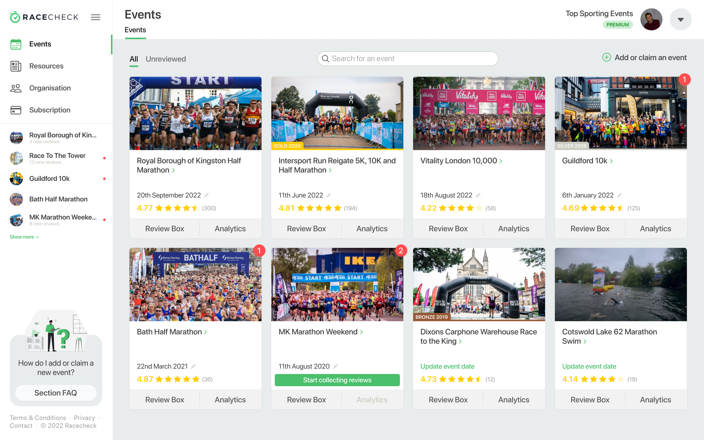
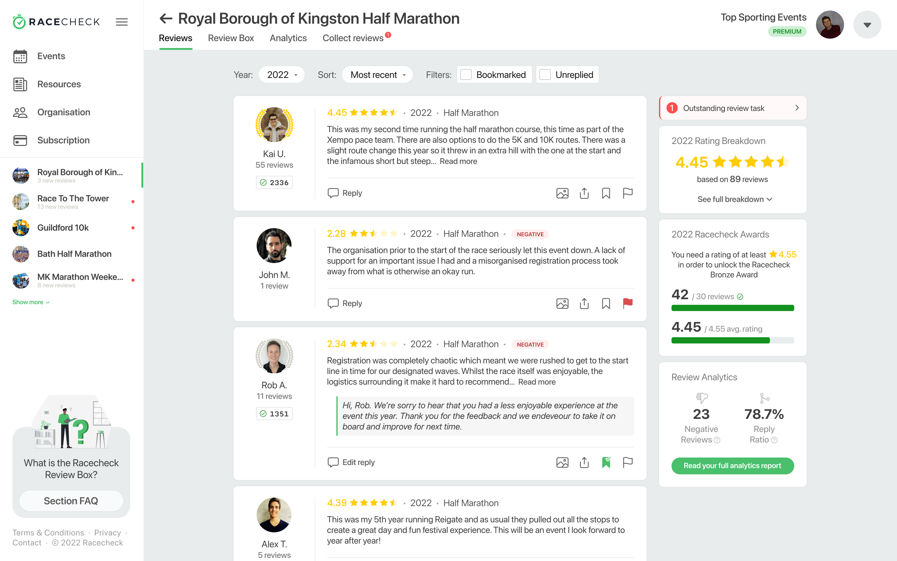
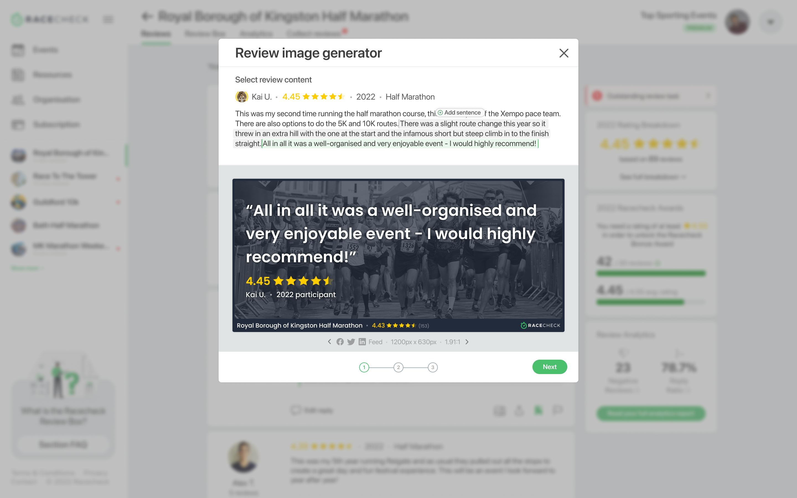
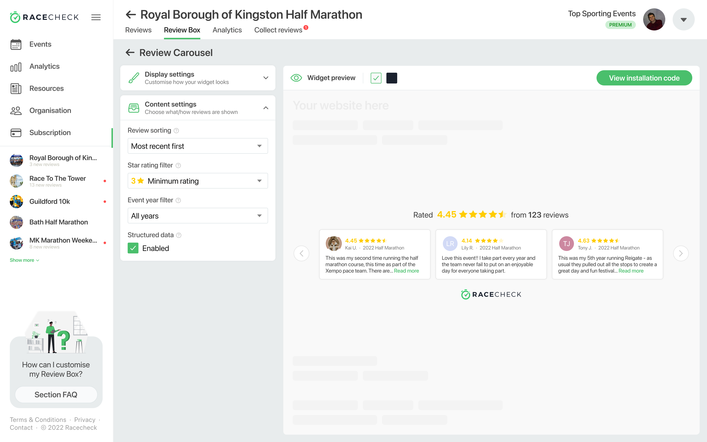
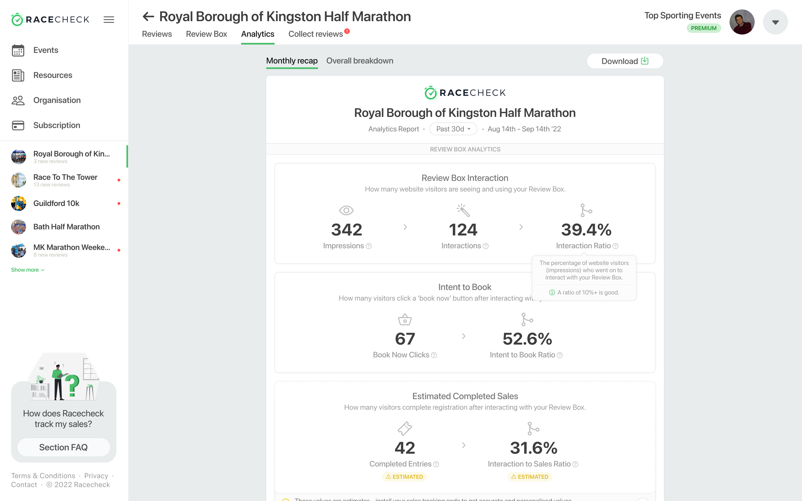

WIP
All-in-one review collection and management platform.
Racecheck for Organisers is the suite of tools which enables mass-participation event organisers to collect, manage and impactfully display their feedback. From analytics reports to customisable widgets driving sales on their own conversion channels, Raceheck for Organisers has proven to be invaluable based on organiser feedback.
The platform is still in active development, so I am currently in the process of writing up a full review outlining the entire product development process; including initial research, sketches, wireframing, mock ups and everything in between.
In the meantime, you can get a glimpse of the finished project by clicking here, and checking out some high-fidelity mock-ups below.
Organisers can add and manage their full catalogue of past, current and future events.
Reply to, share, and manage reviews in a clean, customisable and organised feed.
Generate and share social content from reviews, directly in the dashboard.
Easily customise, deploy and intialise sales tracking for Racecheck Review Boxes. No tech support required.
Insightful reports take the guesswork away from analysing event and Review Box performance.